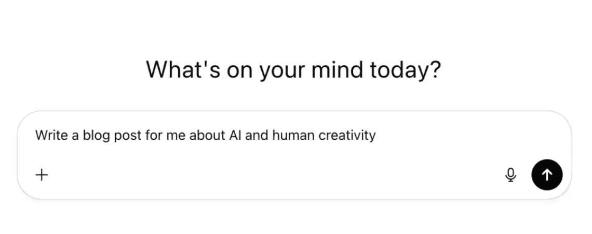

This story began as a voice note.
That picture above is really me, but the voice note that started this story wasn't captured sitting down. My favorite way to kickstart a writing project is with a walk; letting myself ramble as I ramble.
I consider myself creative, but something about staring at a blank page makes me freeze. However, let me walk and talk and my creativity builds up speed, like a round rock given a nudge past the apex of a hill.
I'm not saying my writing is any good — I probably alliterate too much — but I am saying that my writing is worthwhile.
So is yours.
So is everyone else's.
I'll cut to the chase because I suspect you can already tell where this is going: AI is good for writing because it creates more writers.
To be clear, I don't consider this writing:
Writing is composing text. Asking ChatGPT to write a blog post will generate some text, but it isn't writing. I don't think you'll disagree.
But do you also agree that there's a difference between AI-assistance and AI-generation?
I believe there's a version of the near future where AI-assisted writing ushers in a new golden age of blogging, simply because a new cohort of writers enter the scene. Writers like me, who love to read, want to participate, but need all the help they can get to arrive at the page ready to write.
What does AI-assisted writing look like? YMMV, but for me it looks like this:
- AI makes voice notes actually useful, not only through high-fidelity transcription but also by keeping transcripts organized (an underappreciated consequence of voice notes is that it creates a mess of text that can't be put to practical use without some organization — AI is excellent for automatic, semantic organization of my notes).
- AI helps me develop topics by asking questions, pushing me to think deeper. Sometimes, rambling monologues unlock my creativity, but sometimes what I need is for someone to interview me.
- AI helps me trigger self-inspired Aha! moments, not by feeding me ideas but as an interface to my increasingly deep library of captured thoughts. Imagine me browsing a newspaper-style interface where each "article" is a remixed and resurrected version of a thought I had previously captured.
- Finally, AI helps me shape my thoughts into an outline.
Maybe that's a bit dramatic. How did Tony Stubblebine , CEO of Medium, put it?
AI translations, spell-checks, and note-taking help people tell their stories. But the spectrum veers into a gray area as AI contributes outlines, research, and even partial sections.
— How can writers use AI to tell human stories?
I agree; using AI to create an outline is a gray area. But like all things in the gray area, the virtue of using AI like this is a matter of nuance. How you use AI to create an outline makes all the difference.
The outline for this blog post was created by AI. But before you judge me, consider what I contributed and how I used AI to shape my contributions into an outline.
I contributed 3 voice notes and the thesis.
My thesis: If it's true that this blog post wouldn't exist without AI, and if it's true that this blog post is fundamentally human, then it's true that some human stories wouldn't exist without AI assistance.
My voice notes are rambling monologues that danced around this thesis. There is a lot of cruft in those voice notes. A lot was cut to produce the outline I'm looking at right now. AI took my thesis and rough thoughts and shaped it into a coherent outline, but AI did not contribute a single idea or turn of phrase.
That's the difference between AI-assistance and AI-generation.
So, tell me, is this story human?